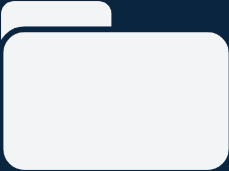
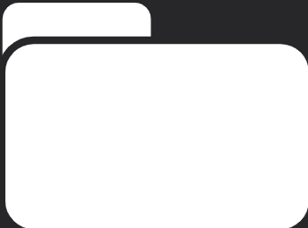
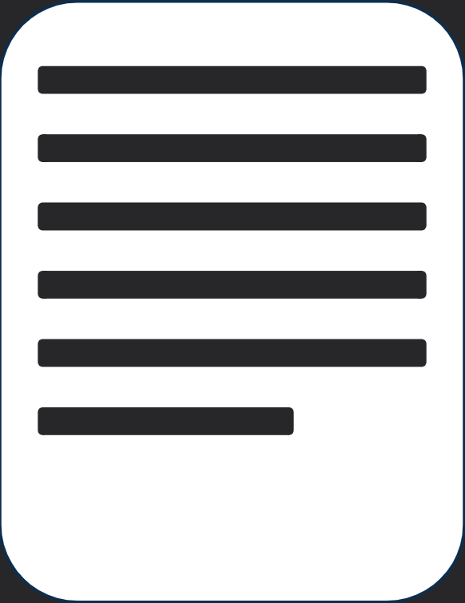
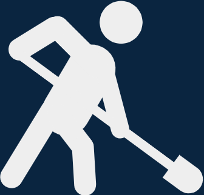
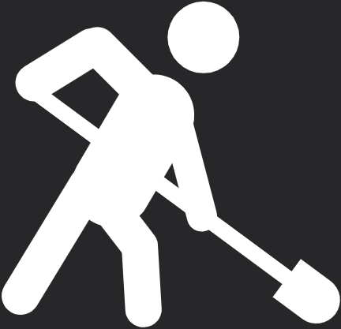

Technical Portfolio
As a computer scientist, I'm always looking for different ways to apply the many things that I learn. From something more fun and exciting to the technical and nitty gritty, one way I apply my learnings are through various projects.
View portfolio ->Qualifications
As I continue to learn and grow as a computer scientist, I acrue more and more qualifications that show just how far I've come. As I do so, I am able to unlock even more oppurunities that continue to develop my knowledge base and skill set.



Service
As much as I am a copmuter scientist, I am moreso a member of my community. I take pride in my services to the people and community that I interact with and I hope to continue to do my part in making the world a better place.
View service ->